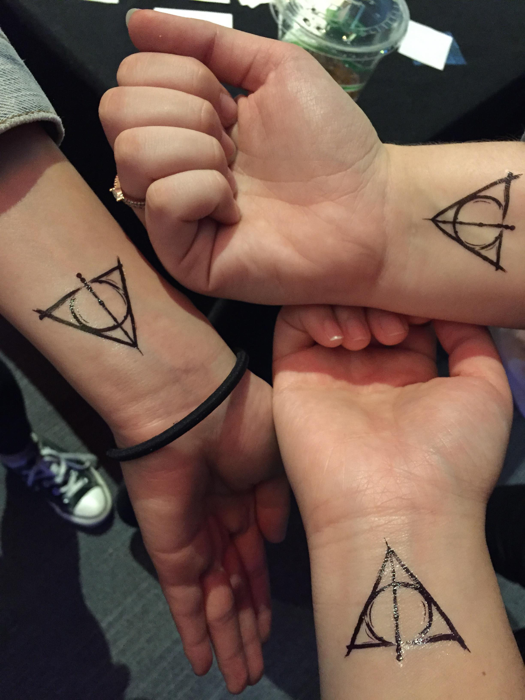
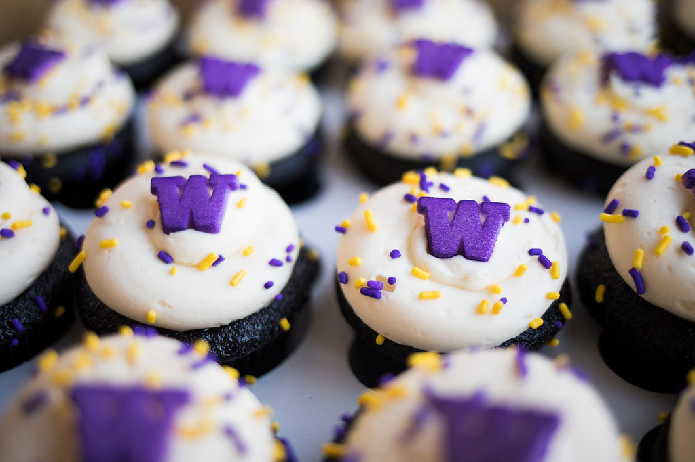
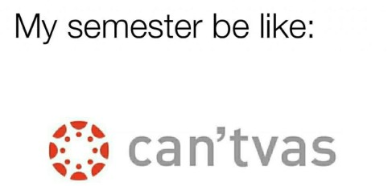
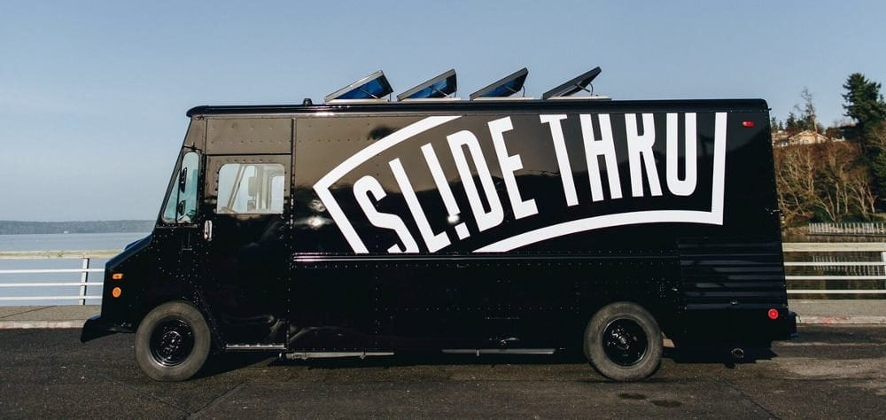
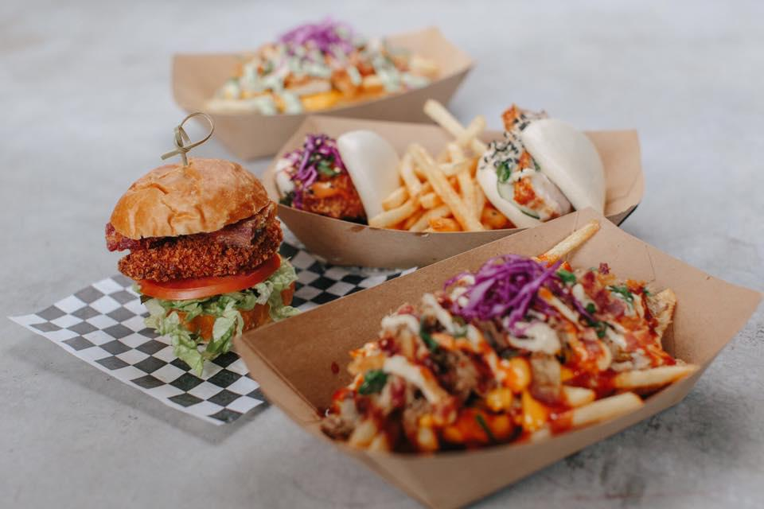
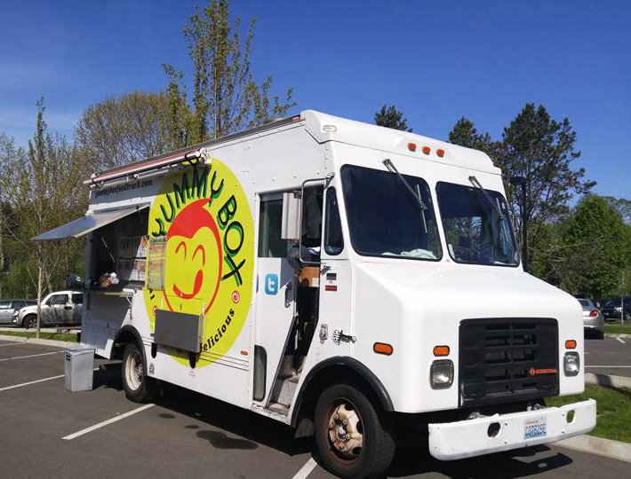
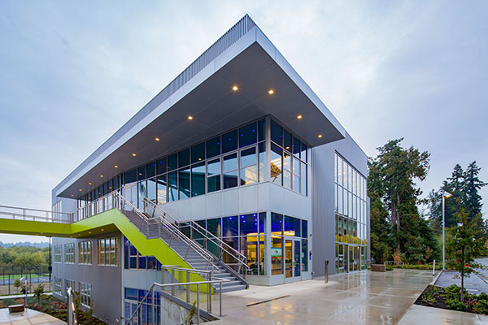

Table of Contents:
About Me 👩🏻


Hey there, my name is Jenna! I am currently a senior at the University of Wahsington- Bothell, and will be graduating this Spring 2021, with a bachelor of Arts: double majoring in Media and Communication Studies and Culture, Literature, and the Arts 👩🏻🎓! Throughout my four years at UWB, let's just say it's been a wild ride!🎢! I have had the privilige of being a student leader at the ARC for two years now. While also building amazing mentor and mentee realtionships with my campus community, and working alongside some amazing institutions. I would like to think: "I know some stuff about college."
The thought of college can sound quite daunting. But one thing to remeber, is that you are doing this to better your future- don't ever forget that! Some people say college is the best four years of thier lives, and for some it may not be-and that's very normal. Everyone has thier own adventure and story to tell. For me, I personally had an amazing four years despite the pandemic and the shift to Zoom University.
No matter how many years it may take for you to finish, know that everyone has their own timeline. Do what works best for you.
I hope that this web page, can be a helping hand in getting you through it all.
History of UW Bothell 🗺️
The University of Washington-Bothell (UWB) was established in 1989. It is one of the three branch schools of the University of Washington. The University of Washington mascot is Dubs, the Alaskan Malamute. Thus, making studetns huskies, aka DaWgs.
Although farily new, UWB has made tremndous impacts, and is rapidly growing year after year.
Fun fact, UWB had a founding faculty of just 12! The campus held its first classes during Autumn 1990, and the first class to graduate was in 1991, and consisted of only 3 students! As of June 2021, this is the 30th commencement they have held. Fun fact, this is the largest UWB class to graduate- yet! * Proud to be part of the graduating class of 2021~!*
The campus we see today isn’t exactly what we see today. It was actually home to the 500-acre purebred cattle Boone-Truly Ranch. The property was later sold in 1995 to the state of Washington. Fun fact, the Truly house is still around on campus today! Many teachers hold office hours there! It’s the cute little blue house near the surface parking lot. On a sunny day, you can see it peeking through the trees!
The UWB campus is shared with Cascadia College and sits atop a 128-acre plot of picturesque land overlooking protected wetlands and Cascades beyond. UWB campus is quite modern and has stunning architecture and landscaping. The campus received the American Institute of Architects 2002 Honor Award for Washington Architecture! Its buildings were designed to complement the lands natural beauty. The campus is very environmentally friendly and are equipped with advanced technology for faculty and student use.
References:
University of Washington Bothell. “History.” History - About UW Bothell - UW Bothell, 6 June 2021, www.uwb.edu/about/history.
Academics 📚
The university of Washington-Bothell is home to more than 6,300 students, in which are enrolled in more than 55 different graduate and undergrad programs!
In my personal opinion, what makes UWB such a great university to attend to is because it is a smaller campus, you have the opportunity of building more tight knit relationships- whether that be friends and or your professors. Allowing you to create long lasting friendships. Another great benefit is that because the campus is smaller, you can get the necessary help you need when it comes to classes. As they can more easily provide and set time aside for you in helping you to succeed.
During my undergrad, I am so fortunate and thankful to have had the amazing opportunities of building strong mentor and mentee relationships with my professors and campus community. It hoenstly makes your college journey that much more valuable and fun.

🤓Registration days:🤓
Let me tell you, registration days are a pain. I am so excited that I can finally say I am done done with registering. But have no fear, I am here to help give you some tips on how to prep!🦸🏻 So, because UWB is on a tri quarter system, most students will register: end of spring quarter for Fall, then mid fall for Winter courses, then mid-winter for Spring courses and the cycle continues.
Tip #1: Prep, Prep, Prep!⏰
Now, most students wait until the day before registration, and or may even forget. But there are some students * I was one* who would prepare classes a couple of weeks before their registration day.
Around midterms week, you will see a little alter on your “MyUW” page, that will not only remind you when your registration date is, but it will also prompt you to update some things such as- whather you want to be able to vote in ASUWB elections, want a UPASS (Bus fee) etc. Doing this is vital – I repeat vital! This is important, because if you don’t update this, you may find yourself having issues confirming your class on registration day- which basically means a student might take the spot you were intending on having for that class.
I would also highly recommend you to reach out to professors who teach those classes if your comfortable doing so. Ask them anu questions you may have and or some clarifiactions. Or if that class is being taught by one of your previous professors, they can always give you more information.
Tip #2: Plan your classes strategically!✨
If you work and are a full-time student like me, time management becomes crucial. Think about what times you are clocked in to work at your job, and then find what classes work best for your schedule. Luckily for me, I worked on campus, so I was able to be in close proximity- allowing me to run from class to work. Start finalizing your schedule, and come up with a few back up courses in case.
😴The night before registration day 😴
Be sure to get a full night of sleep, and charge your laptop- your'e going to need it!
Tip #3: Set an Alarm!⏰
Be sure to set up your alarm at atleast 5:45 am to get your computer up and moving. By the time 6:00am rolls around, you're going to be furiously typing and clicking away. Becuase so many students are going to also be up at the same time as you, be sure to have your registration open and ready to go.Activities 🎨
⭐ Back to School Kick Off: ARC Carnival ⭐
At the beginning of every school year there is always an ARC carnival. Yes, I was one of those people that would drag my friends with me- and then we would have the time of our lives. Plus, you pay to college and all of these events are held for free since you already paid for tuition- so why not take advantage of these amazing and un opportunities! One of my favorites was the Harry Potter themed party! 
💜W Day!💛
W day is also another one of my favorite events. W Day tradition lives on as a campus and community-wide celebration of the UW’s birthday, coinciding with Homecoming. W day is always November 4th and is a day filled with fun, excitement, energy, and food! Grab your friends and enjoy the day! Bring your spirit of being a husky! 
📚 Finals Week 🌱
During Finals week, the campus hosts several events that helps students to de-stress. Many of these events can vary from taking power naps in the ARC, to making yoru own DIY Slime, petting dogs, making free parfaits, and one of my favorites was planting succulents! 
🌺 Spring Fest!🌺
This is my second favorite acitvity on campus!This is a week dedicated to fun events! This usually occurs duing the last week of May. Whether that be free food, tie-dye, petting zoom face painting, getting a caricature of your self etc. ! It’s honestly so fun, and running around in the sun with your friends is a blast! It was always a tradition I did since I was a freshman. If you have a close knit group of friedns- drag them with you! Spring Fest Activities 🌼
Commuting to Campus🚌
Tip #4: How to Get to Beardslee Building- FAST⏰
As a freshman, I had no idea of where Beardslee Building was, nor how to get there. So, here are some tips on how to get to this building. First, If you want to know if you have a class in Beardless Building, check to see if any of your rooms are labled as UWBB.As a freshman, I was completely confused when I saw this on my schedule. Luckily, I started class Monday, but didn’t have my class in the Beardslee class until the Tuesday. So, I thought strategically, and decided I would find the class first, before the day I had that class.
So on my first day I took the path that most sutdetns took. (map below)

Now, at first glance it seems like it is shorter and more easy …right? Well actually in my personal opion, this felt and took the longest.
Taking this path, though yes it is more scnenic- however,remember you have a class you must be at in less than 15 minutes. What makes this path so tedious, is that you end up running through many intersections with stop lights- which is about 3-4 minute wait. This path along atleast 5-8 minutes (you need to speed walk and manuver around other students), which only gives you about 5 minutes to be in class. Beardslee building can also be a bit little confusing when you first enter, so be sure to allocate soem time for that during the first week.
Whereas, if you take the this path (below) which is the one I would recommend. You get to your class in less than 10 minutes in total.

Because you walk through Husky Housing, you have little no traffic, no stop lights, and the path is quite flat, so you end up feeling less tired, and can speed walk more quickly. You only really run into 2 stop lights. Whereas, the second one you run into at least 3-4 stop lights.
Tip #5: Elevators aren't always the "fastest" way to get to class 😓
Honestly, never take the elevator unless if you really can’t make it. Elevators always take a long time.ALso,because this is usually the most popular method of getting to class, it's going to be pretty full, and can get pretty busy- slowing it down even more. So, by taking the staris, you will save the time of waiting, and will already be in class by the time your classmates get into the elevator.After the first week, you will soon fine your groove and what works best for you!
Best Places to Eat 🍽️
Slide Thru 🍔 is by far one of my favorite food trucks on campus. 💯The owners are amazing and always come with upbeat energy- while serving you with high quality food. Their moto states:"We serve the best #BUNSANDBAOS in town! With our signature SL!DE THRU menu, we offer a variety with each and every experience specializing in Asian American comfort foods such as our 808 Chicken Baos (*My favorite* 🤤) and The DM burger." Their menu also offers signature loaded fries featuring the Porky Pile! If you ever see them, be sure to Slide THRU! 
Another great food truck on campus is Yummy Box 🍗.
Yummy Box can aslo be found at other locations within the greater Seattle area. This food truck offers unique addions to classic Asian flavors that comes in a box. They serve varying dishes that ranges from Tiawanese Pork Stew, to yummy box fried noodles,japanese curry to popcorn chick with rice and so much more. With their wide range in dishes, there's bound to be something you may like!

Best Places to Hangout🌆
The ARC ✌️

The ARC ( Activities and Recreation Center) is a student building that has three different levels. It was built back in the fall of 2015. Over 100 student leaders work in this building * Including me! 👩🏻 *
💪🏻 LL: Fitness Center 💪🏻
In the Lower Level (LL) this is where the Fitness Center is located. If you are a fee paying student, you automotcially have acess to the gym! The fitness center has various equipment that you can use, as well as several different classes held throughout the week. Classes such as cycle, HIIT, and etc.

💻First Floor: Information Desk/ Gaming Alcove 🎮
On the First Floor, this is where the information desk is, where you can get all of your questions answered. This is also home to the gaming alcove, where there are several different gaming consoles yo ucan play with. Best of all, this floor leads you right to the Food trucks!! This floor is also where our student leadership (ASUWB) is as well. So if you ever have questions or suggestions on how the campus can improve for the studetn body etc. you can go there.

☀️ Second Floor/ ARC OVerlook: Hangout Space & Events Floor🎇
On the Second floor, also called the ARC Overlook. This is one of my favorite spaces as it has huge glass windows that lookout to beautful views of our campus and wetlands from all ends. This is a popular space for studetents as it is a study space/ events floor.
 .
.
Game Time!🎲
Help Dubs get through college! Don't let him get a failing grade! Be sure to dodge the paper with an F on it! But of course, mistakes are bound to happen along the way.
To play the game: *please press the " click to play" button and once the scores start rolling, start pressing the space bar! Once you loose, re-click the button again, wait for the score to start rolling, and then go go go! I hope you have fun!*
0
Note from the Creator😍
I hope you enjoyed looking through my web page! And hopefully you learned something new and found some helpful tips! My intentions for creating this web page, was to to be a helping hand, a virtual best friend that can help you get through college.This was such a fun project for me to create! After doing this, I realized that this is also a mini diary recap of my own personal college adventure that I can soemday look back on. If I could have a survival guide, this would be it! I hope that this was useful. As always, remeber to be yourself and enjoy the little things in life. Four years may seem like a lot, but let me tell you, in a blink of an eye it will all be over. Do you best, work hard, and follow your dreams! If I made it, you can too!
That is all for now! Wishing you all the best on your adventures!
⭐Jenna Yang ⭐